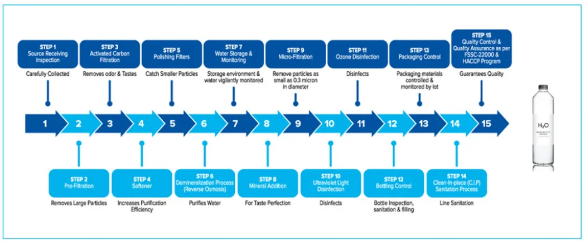

Products
Unlike other mineral water providers, our primary focus is solely on packaging 0.5-liter bottles in separate forms. Alongside the specific models produced by the company (glass bottles and plastic bottles), which you can see in the pictures, we can also custom design and produce bottle models according to your preferences. This is possible when the minimum production quantity includes one week of production for your esteemed customer's order. You can go ahead and place your orders through our contact details.
Quality Steps

Not just any water makes it into our bottles. Each and every drop of water has to exceed all sorts of federal, state, industry and company standards. In fact, our water tastes so crisp and refreshing because we go through multiple processing steps that are monitored closely at our manufacturing facility for each bottled water to ensure every container meets or exceeds our quality standards. Specifically, federal, state and industry bottled water quality standards establish limits for microbiological, physical, chemical and radiological substances for bottled water products. Adherence to state, federal and industry bottled water quality standards ensures that every bottle we deliver to your home or office, will be safe to drink, and have a consistently great taste. The result is bottled water that has a crisp and refreshing taste every time you fill your glass.
Analysis
Our Secret Formula:
Once the water is purified, we inject a specially formulated blend of minerals (calcium chloride, magnesium chloride, potassium bicarbonate and sodium chloride) that provides Culligan’s ultra-clean and smooth taste.
Mineral Content (mg/l):
| Calcium | 20-40 |
| Magnesium | 2-5 |
| Sodium | 5-15 |
| Potassium | <10 |
| Chloride | 60-100 |
| Sulphate | <10 |
| Nitrate | <0.1 |
| pH | 6.5-8.5 |
| Total Minerals | 130-150 |
Each 250 ml glass of Culligan Water contains the following percent daily values based on a 2,000 calorie diet:
Calories……………..0%
Total Fat…………….0g / 0%
Total Carbs………..0g / 0%
Water Quality Data
See copy of our water quality analyses as conducted by certified labs. The analysis includes bottled drinking water quality test results for substances including inorganic, organics, and radiological as well as physical parameters.